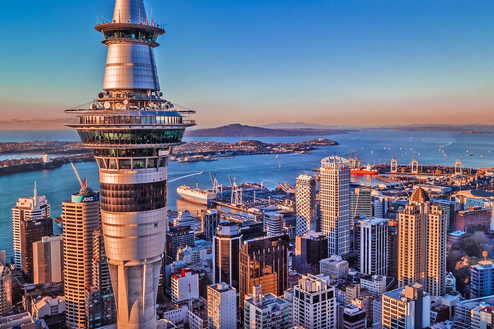

{kind=link}
Cities
Auckland
One of the best places to live in the world in terms of quality of life, Auckland is the largest city in New Zealand and the first point of entry for most people. First impressions immediately ‘wow’ you, as its two lovely harbors glitter in the sun and numerous volcanic cones reach towards the heavens. On the outskirts of the city, lush farmlands stretch towards the horizon. Known as the ‘City of Sails’ its surrounding waters are full of yachts and sailboats, while skyscrapers impressively rise up just beyond the waterfront and lots of little islands lie not far from the city. A laidback place with a provincial feel to it, Auckland is actually the biggest Polynesian city in the world.
ChristChurch
A delightful city that is the largest in the South Island, Christchurch is currently being rebuilt after the 2010 and 2011 earthquakes that devastatingly struck, destroying so many of its buildings. New buildings and businesses are opening up all the time, and the buzz about the place makes it a vibrant city on the move. Known as the ‘Garden City’, it is a pleasant, leafy place – there are lots of parks, museums and galleries for you to visit. With a very English feel about it, Christchurch’s beaches on the Pacific Ocean and sizeable Pacific Islander population give a different flavor to it. From here you can go ballooning, river-rafting or trekking in the nearby countryside.
Queenstown
In addition to its stunning location on the shores of Lake Wakatipu, the spectacular mountains surrounding Queenstown make for one of the most beautiful scenes in the whole country. While it is certainly blessed in terms of scenic settings, the city also has a fantastic arts scene for visitors to enjoy, as well as some delicious dining, delightful bars and excellent vineyards. Most people, however, visit Queensland because it is known as the ‘adventure capital of the world’ – there are over 220 hair-raising activities for you to try. Whether it’s skiing, bungee jumping or zip-lining, paragliding or mountaineering, Queenstown has it all.
Rotorua
Lying on the shores of the lake after which it is named, Rotorua is renowned for its fabulous hot springs and geysers that are absolutely everywhere. Situated at the heart of the Taupo Volcanic Zone, the city is the North Island’s most popular tourist destination – steam and spray constantly cloud its streets and the scent of sulfur hangs heavy in the air.
Landmarks
Moeraki Boulders
The Moeraki Boulders are some of the most fascinating things to see in New Zealand and this is definitely one of the most popular attractions in the country. These perfectly spherical rock formations are technically not boulders but concretions exposed by erosion, and are found down on the Otago coast in the South Island. Maori myth says that these boulders are in fact the debris of a massive waka (canoe).
Craters of the Moon
If you feel like taking a stroll into another world then just north of Taupo on the North Island you’ll find the Craters of the Moon Geothermal Walk. The name gives it away. The land, with its huge craters, lack of plant life and seething gouts of steam, looks more like another planet than anything terrestrial. Geothermal activity is responsible for the steam, of course, as well as the pervasive, sulphurous smell. Visitors pay a nominal fee for admission and follow a carefully mapped hike through the dramatic terrain. The walk takes about an hour to an hour and a half, depending on the route selected.
The Sky Tower
The Sky Tower is the tallest of its kind in the Southern Hemisphere. Its construction began in 1994 and was completed in 1997 – a solid six months ahead of schedule. Architect Gordon Moller was in charge of its design, partnering with Fletcher Building to conceive what is now Auckland’s most distinguished man-made landmarks. The tower is a popular attraction for thrill-seekers and fine diners and also serves as an aerial transmission centre for TV channels, radio stations, weather forecasting and telecommunications providers.
Huka Falls
When the Maori in the area named the falls after their word for “foam”, they surely hit the old nail on the head. This is one of the most visited natural attractions in the country and is a site you do not want to miss. Approximately 220,000 litres of water per second pour from the waterfall. These falls are fed by the Waikato River, one of the country’s longest rivers, which drains into Lake Taupo. Those wanting a different perspective can enjoy a boat ride to the base of the falls. Other activities near Huka Falls include mountain biking, swimming, birdwatching and canoeing.
Famous Citizens
Ernest Rutherford
Ernest Rutherford is known as the father of nuclear physics after making three major discoveries that have shaped science as we it know today. He was born in Brightwater, near Nelson, and was one of the first international students to gain a graduate scholarship to Cambridge without going through the undergraduate system. Rutherford won the Nobel Prize for Chemistry in 1908 for his work on radioactive chemistry and the transmutation of elements. He was also the first scientist to split the atom and discover its nuclear makeup.
Sir Peter Jackson
Thanks to the Lord of the Rings trilogy, Sir Peter Jackson has become a familiar name that needs no introduction. Before he rose to international fame, the New Zealander was locally known for an arthouse film about matricide, a mockumentary about a fictional filmmaker and a series of DIY horror flicks. Jackson’s Tolkien-esque endeavours have not only taken the silver screens by storm, they have also had an impact on his homeland’s ever-growing tourism industry.
Kate Sheppard
New Zealand was the first country in the world to give women the right to vote, and Kate Sheppard was the driving force behind its universal suffrage movement. Sheppard inspired like-minded campaigners from all over the globe to fight for women’s rights in political participation. A natural leader, Sheppard campaigned for change in public meetings, through her own writings, and organised petitions as well as her ongoing initiatives to liaise with local politicians.
Sir Edmund Hillary
 With regards to global achievements, they don’t get much bigger than Sir Ed’s feat of being the first person to conquer the summit of the mighty Mount Everest in 1953.
Many people (outside New Zealand) thought Hillary was British (being part of the British expedition) but his response having reached the summit was undeniably Kiwi – “We knocked the bastard off!”. He also became the first man to reach both poles and have Everest under his belt.
Sir Edmund Hillary was born in Auckland in 1919.
With regards to global achievements, they don’t get much bigger than Sir Ed’s feat of being the first person to conquer the summit of the mighty Mount Everest in 1953.
Many people (outside New Zealand) thought Hillary was British (being part of the British expedition) but his response having reached the summit was undeniably Kiwi – “We knocked the bastard off!”. He also became the first man to reach both poles and have Everest under his belt.
Sir Edmund Hillary was born in Auckland in 1919.